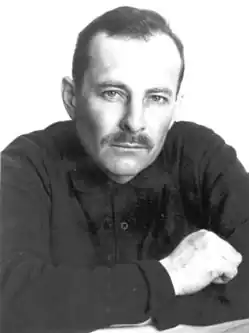

ПАШКОВСЬКИЙ Євген Володимирович народився 19 листопада 1962 року на станції Разіне у Житомирському краї. Навчався в індустріальному технікумі та педагогічному інституті Між тим — праця монтажником на будівництві, короткочасне шахтарювання, метробудівництво, асфальтівництво, підпрацьовування вантажником на різних складах, солдатчина, мандрівне вільне заробітчанство.
Євген Пашковський — письменник; голова комісії з видавничих проектів Національної Спілки письменників України; член редколегій журналів "Світовид", "Основа", культорологічного альманаху "Хроніка 2000". З 1992 р. — на творчій роботі. Член Національної Спілки письменників України (з 1991), ПЕН-клубу (1993).
Лауреат Міжнародної премії Фундації доктора М.Дем'яніва "Свобода і мир для України" (1993), міжнародної премії Фундації Є.Бачинського "В свічаді слова" (1997). Автор романів: "Свято" (1989), "Вовча зоря" (1990; окремі розділи перекладені англійською і німецькою мовами), "Безодня" (1992), "Осінь для ангела" (1993), роману-есею "Щоденний жезл" (1999; частково перекладений вірменською і німецькою мовами; диплом ЦРД "Еліт-профі" у проекті "Книжка року-99").